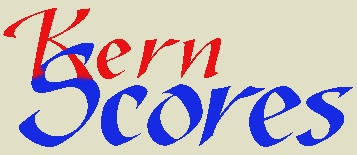
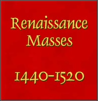
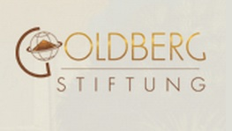
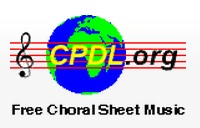

Building a Corpus
Posted by Catherine Motuz on September 03, 2012
A necessary requirement for any kind of corpus research is, obviously, a corpus. It is one thing to have access to libraries of the last thousand years of music, but quite another to have it in a format readable by a machine. Constructing the ELVIS corpus is not complete, but as the time approaches to run queries, it seems like an excellent moment to thank some of the people who have contributed the notation files that make it up. Some of the files provided come from public sites, such as cpdl.org (known as the “Choral Wikipedia), and others have been donated by other research projects and even individuals. Files are uploaded individually in order to make sure that a minimum amount of metadata is attached to each entry. Because of the time this takes (1-2 minutes per entry in general), not all donated pieces are up on the database yet. Nevertheless, it’s never too soon to thank the people who have provided them.
KSWe are not the first to assemble a collection of pieces in symbolic notation specifically for computational musicology: KernScores is a pioneer in this field. Kern is a syntax used to represent music for use with Humdrum, one of the first and still a highly-sophisticated toolkit for analyzing music. Kern and MIDI files are the only two formats that can be used with both Humdrum and music21, but tend to contain more specific information than MIDI. Another set of Humdrum files we are using is the electronic edition of the Palestrina masses, digitized as MIDI files by John Miller from the 33-volume c1880-1908 Breitkopf & Härtel publication of Palestrina works, edited by Franz Xaver Haberl, which was converted into Humdrum files by Bret Aarden. 
Some of our files come from other current research projects such as The Josquin Research Project and Digital Du Chemin—both fascinating and cutting edge.
Started by Jesse Rodin at Stanford University in 2010, the Josquin collection includes pieces by or attributed to Josquin des Prez, arguably the most popular composer of the early 16th century. The site is searchable and includes some fascinating analyses of Josquin’s oeuvre. These files are also in Humdrum format, making them easy for us to use and rich in detail.
Digital Du Chemin is also an analytic project, focusing on the 16 books of chansons printed by Nicolas Du Chemin in France in the mid 16th Century. What makes the project particularly special is that it not only involves analyzing how voices behave in this kind of writing, but uses that knowledge to reconstruct the “lost voices” of missing partbooks. They have donated files to us in MusicXML, a format that has become common since both Sibelius and Finale can read and write it, which preserves a lot of the integrity of pieces, but can be read only by music21 and not by Humdrum (at least not without being converted into MIDI first).

We are especially grateful to individual contributors, for whom building up their collections represents years of work. Rob Wegman of Princeton University has donated his collection: “Renaissance Masses, 1440-1520.” This vast repository of informationally rich MusicXML files will not only expand our database significantly, but will allow us to study the mass as a genre.

Clemens Goldberg, of the Goldberg Stiftung, has provided us with his editions of 15th-century pieces. For these editions, he has used CMME, a sophisticated format that allows viewers to toggle the clefs and notational styles of pieces that they are viewing in a web browser. This format is not readable by music21 though, which means that we will have to convert the files before adding them to the database. Nevertheless, they are such a unique set and the editions so well made that it is entirely worth the extra effort.
Probably the most common encoded music on the Internet is to be found in MIDI files. Designed to control instruments rather than to represent music symbolically, MIDI files lack some specific information when read as music notation. For instance, as MIDI only specifies by number which key of a piano to activate, it regards all enharmonic equivalents as interchangeable (substituting an Ab for a G# for instance), which is antithetic to music before the 18th Century.
For all of its issues however, MIDI remains a file type we can’t ignore, because it represents an enormous volume of encoded music on the Internet, as it is also an easy kind of file to create—almost every notation program saves into MIDI and any computer can play it back. The Classical Archives MIDI collection is a particularly rich source of files, providing us with much of the later repertoire in the ELVIS database. Another source of MIDI and every other file type imaginable, is the ChoralWiki, who has been collecting vocal scores since 1998, and now boasts nearly 15000 entries.

Finally, some of our editions come from the members of ELVIS team themselves, who have edited pieces for concerts, for study, or just for fun. Put together, all of these contributions will soon make the ELVIS database one of the richest sources of encoded music notation in the world.